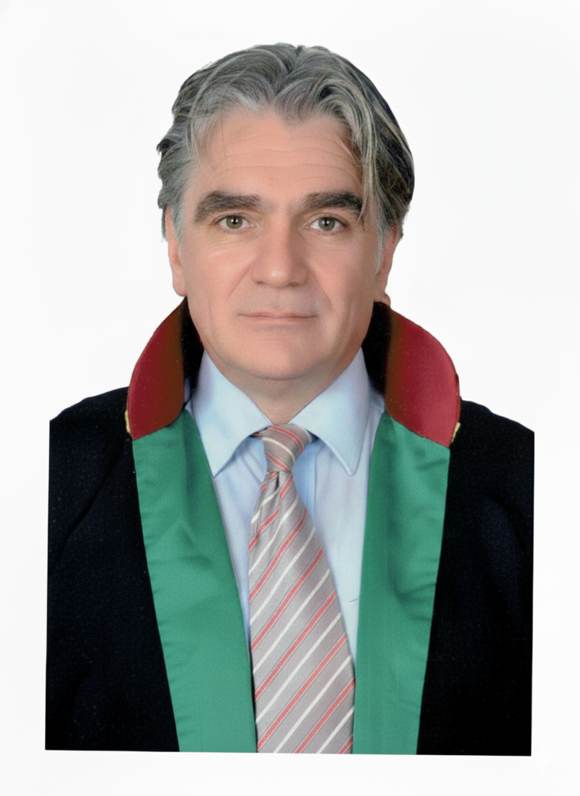

“Deneyimle Gelen Güç
Güvenle Gelen Sonuç”
Müvekkillerimizin haklarını korumak ve hedeflerine ulaşmak için yılların getirdiği hukuki birikimi ve stratejik yaklaşımı bir araya getiriyoruz.
Randevu Alın

Av. Abdullah Güray Akyol
yapım aşamasında
Temel Faaliyet Alanlarımız
Aile ve Miras Hukuku
Anlaşmalı/çekişmeli boşanma, velayet, nafaka, mal rejimi tasfiyesi ve miras hukuku uyuşmazlıkları.
Ceza Hukuku
Soruşturma ve kovuşturma süreçlerinde şüpheli, sanık, mağdur ve müşteki vekilliği hizmetleri.
İş ve Sosyal Güvenlik Hukuku
İşe iade davaları, kıdem ve ihbar tazminatı alacakları, iş kazaları ve hizmet tespiti davaları.
Gayrimenkul Hukuku
Tapu iptal ve tescil, kamulaştırma, kira tespiti ve tahliye davaları gibi gayrimenkul uyuşmazlıkları.
Bizimle İletişime Geçin
Hukuki bir sorunuz mu var? Bir danışmanlık randevusu ayarlamak veya detaylı bilgi almak için bizimle iletişime geçmekten çekinmeyin.
Adresimiz
Osmanağa Mh. Söğütlüçeşme Cad. No:64 K:7 D:145 Kadıköy-İstanbul